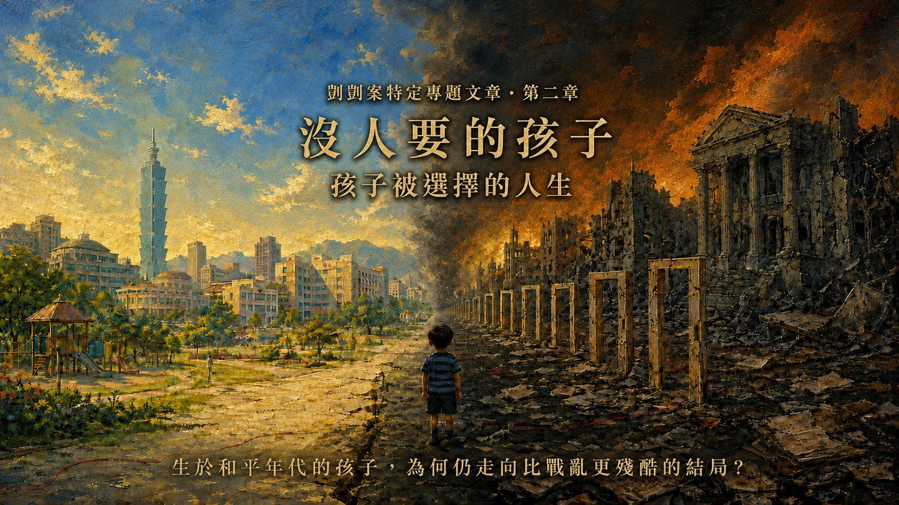
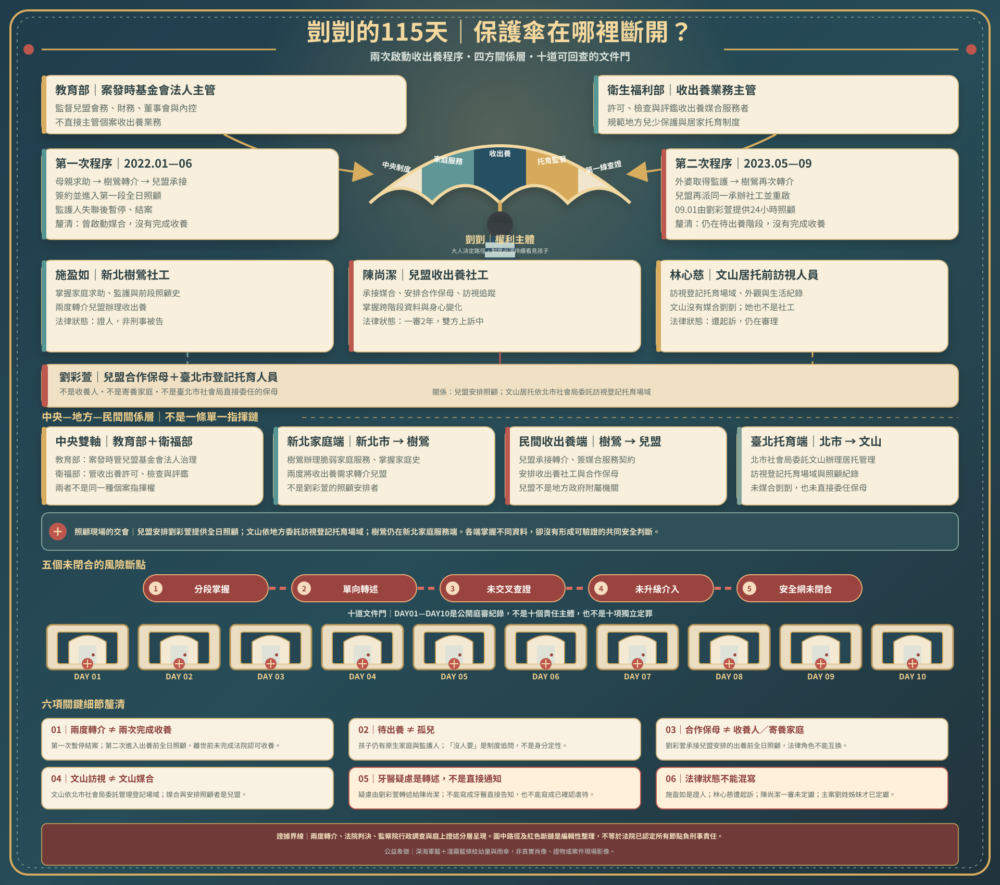
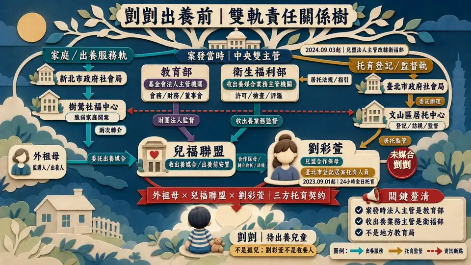

兩次啟動收出養程序，不是兩次完成收養
第一次因監護人失聯而暫停結案；第二次在外婆取得監護權後重啟，孩子其後進入合作保母的24小時全日照顧。
查看兩次程序與來源
左右和平城市與戰火廢墟為制度性對照；深藍、淺藍條紋衣幼童為象徵性公益藝術，非剴剴真實肖像、案件現場或證據影像。海報標題已縮小，避免遮蔽背景與孩子。
本頁涉及兒童不當對待與死亡，但不展示傷勢照片。篇名「沒人要的孩子？」是對制度漂流的倡議提問，不是認定剴剴真的沒有人愛、不是指責原生家庭，也不等同「孤兒」。頁面不以倡議推論取代法院認定。若你需要暫停，可以先閱讀證據標示或直接前往制度改善。
這段五秒序幕以象徵性畫面呈現制度選擇的分界；不是案件現場，也不是傷害重演。影片預設靜音自動播放，可隨時暫停或略過。
切換會調整全頁呈現深度；資料不會刪除，深連結仍可直接揭露指定段落。
十五分鐘模式：顯示人物、機構、醫療警訊與責任閉環。
先用三張卡片建立證據邊界，再選擇是否進入完整時間軸、證詞與制度責任鏈。
十日公開旁聽紀錄不是一份判決，行政糾正也不是刑事定罪。本頁用六種標籤，讓讀者知道每一句結論能走到哪裡、不能走到哪裡。
以法院新聞稿或裁判摘要為準；一審與定讞分開標示。
只代表該證人在其時間、空間與感知範圍內所述。
旁聽文字、契約、照片、訪視或醫療紀錄的公開描述。
用於行政責任與制度缺失，不直接替代刑事判斷。
與監察院認定並列，保留彼此差異，不自行裁決。
必須列出推論步驟與限制，不能冒充單一文件直接認定。
公開資料不足以回答，明列缺少的文件或查核方式。
精緻木雕戲台以阿里山、春水、桃花與臺灣藍鵲構成島嶼意象；男女戲偶用一場關於遠行、重逢與責任的對話，從「大人可以選擇」反照「孩子無法替自己選擇」。


按下「開演」，讓木雕戲台與男女戲偶依序展開對話。
野花年年迎風，春水年年照影；我等一個遠行人尚能開口，孩子卻不能替自己問：今夜，誰會回來？
我曾把遠方當作命運，把歸來當作補償。如今才懂，有些等待可以重逢，有些童年一旦錯過，便再沒有第二個春天。
你說愛我，卻把我留給歲月；大人也常說「為孩子好」，卻把他的安全交給下一個人。
若愛只剩承諾而沒有查證，若責任只停在門前交接，再華麗的誓言，也遮不住斷裂的傘。
看花蝶相逐、柳枝拂水——它們都懂得回望。願每一個看見警訊的人，也肯多走一步：問清、確認、留下紀錄。
任我衣錦還鄉，也抵不過一個孩子被及時接住。功名能晚，歸期能等，保護不能。
那就別再讓誰獨自站在十道門前，等每一個大人說：我只看見其中一段。
願下一個孩子，在傷害發生以前，就有人伸手接住。
監察院完整調查報告的精確用語是「2度轉介兒盟進行收出養媒合服務」。第一次因監護人失聯而暫停並結案；第二次在外婆取得監護權後重啟。直到剴剴離世，公開資料沒有顯示曾完成法院認可的收養。
母親向新北樹鶯社福中心表示無力扶養、希望出養；樹鶯以脆弱家庭服務開案。
樹鶯同時轉介數家經衛福部許可的媒合服務者；兒福聯盟回覆承接並指派社工。
母親先簽出養服務契約，再與兒盟合作保母、兒盟三方簽家庭托育契約；孩子進入第一段全日照顧。
因母親仍是監護人且聯繫未果，出養程序暫停；外婆接回孩子、另覓周姓保母，兒盟隨後結案。
外婆完成改定監護，取得代表孩子處理出養程序的法律位置。
樹鶯再次把孩子轉介給兒盟；兒盟重新開案，並「再派同一位社工」服務。
兒盟社工協助外婆簽署出養媒合服務契約，第二次程序正式往前推進。
外婆、兒盟合作保母劉彩萱與兒盟三方簽家庭托育契約；剴剴進入24小時全日照顧。
監察院報告將姓名匿名化，但記載第二次「再派同一位社工」；臺北地院一審新聞稿則公開指出，陳尚潔是兒盟收出養社工，收案後由兒盟安排劉彩萱全日托育。兩份官方資料勾稽後，可把人物與程序接起來。
監察院未在報告中點名；法院新聞稿點名第二次承辦者。因報告明載第二次仍派「同一位社工」，可推知陳尚潔的服務連結可追溯到第一次程序。這是跨來源推論，並非監察院直接點名。
一審法院認為，陳尚潔掌握孩子自出生起的成長軌跡、照顧轉換與體檢資訊，能把劉家托育前後的巨大落差放在同一條時間線比較。
法院認定兒盟有招募、評估、訓練、付款、訪視與終止合作等實質工具；陳尚潔則是可以進入照顧場域、親見孩子並落實這些保護義務的重要人員。
一審判決摘要指出，陳尚潔與樹鶯社工施盈如形成分工，並掌握收出養資訊傳遞；「誰叫主責」不是唯一標準，實際資訊與介入能力才是法院判斷核心。
臺北地院114年度訴字第51號判決認定陳尚潔犯過失致死罪、判刑2年；偽造文書部分無罪。案件仍在上訴，以下只能寫成一審認定，不能寫成定讞事實。
保母把自撞、磨牙、害怕等異常歸因於孩子或前保母，卻沒有照片、錄影或其他資料；法院認為仍未要求提出佐證。
異常都在轉入劉家後出現，卻仍片面附和保母，把原因歸給孩子或前段照顧，而未向前保母核實。
頻繁發燒、過敏、受傷與掉牙出現後，未督促完整就醫，也未實際確認傷勢是否接受妥適治療。
未增加頻率、落實不預約訪視、要求詳實生活紀錄，也未把體檢、照片與過往訪視資料逐項比對。
停電、其他幼童生病等理由使訪視延期後，沒有建立必須再次親見孩子的期限與替代查核。
法院認為，如積極查核、採取適當追蹤或通報相關單位介入，有極大可能避免死亡，因而認定不作為與死亡具有相當因果關係。
以下依監察院糾正案文建立日期骨架，再用 DAY2—DAY9 的證詞補入孩子的發展、照顧與被看見的方式。出生及離世當日均計入，共672個日曆日。
顯示 12 個生命節點
監察院糾正案文記載，母親向新北市樹鶯社福中心表示無力扶養腹中胎兒、希望出養；1月28日以脆弱家庭服務開案。
DAY8中，外婆說母親無法照顧，自己曾實際照顧約兩個月；這段證詞說明家庭接住孩子的起點，也呈現家庭的工作與經濟壓力。
樹鶯社福中心轉介多家合法媒合服務者，由兒福聯盟接案並指派社工。這是地方脆弱家庭服務與中央許可民間媒合制度第一次交會。
DAY3記錄蕭○香依資料確認照顧期間為5月4日至6月29日。她提到嬰兒期手腳較緊繃、曾按摩並回報，但沒有描述後來所見的長期站立、自傷或多處傷勢。
周○描述孩子會走、會玩、會說簡單詞語，日常健康活潑；外婆稱每月探視兩次以上。原公開紀錄同段出現8月30日與31日兩個終止日期，因此保留一日差異。
5月8日改定由外婆擔任監護人；6月21日新北再次轉介兒福聯盟；7月18日簽署出養媒合服務契約。孩子的法律身分與照顧安排同時進入重大轉換。
外婆、兒福聯盟合作保母與兒福聯盟三方簽訂家庭托育契約。周○說照顧細節主要交給社工，與後手保母沒有充分交談；外婆說更換原因是出養需要與兒福聯盟配合的保母。
監察院以9月25日兒盟訪視照片與表載9月26日文山新收托訪視紀錄對照，指出前者可見額頭明顯瘀傷、後者未載異狀。檢方2026年另案起訴則指實際訪視日可能為9月22日、涉嫌記載為9月26日；此一指控尚待法院審理。臺北市先前回應稱訪視頻率、地點符合當時中央規範，訪員未見異常。
監察院記載社工觀察到安靜、無精神，保母以剛睡醒解釋。DAY2中，住家看護Mira描述她在特定時段所見的站立、飲食、洗澡與身體變化；她也明確表示不能確認曾到訪的正式穿著者就是社工。
保母先向社工表示孩子掉牙；翌日於公園訪視，11月25日再由保母轉述牙醫所提「刺激、不平等待遇或潛在症狀」等可能性。監察院另指出醫事人員未敏感辨識與年齡、描述不符的風險。資訊雖於12月9日回到外婆端，卻未形成可驗證的醫療與保護閉環。
保母以其他收托兒童生病為由請社工擇日再訪，後續以LINE、電話回報；社工未再親見孩子。這不是「沒有聯繫」，而是聯繫沒有恢復成能直接確認孩子狀態的訪視。
國民法官法庭認定，孩子在長期營養不良與至少42處虐待性傷勢等情況下，因低血容性休克死亡。劉彩萱無期徒刑、劉若琳18年有期徒刑，於2026年7月23日定讞。
這不是逐分鐘重演，也不是替卷證補寫情節。以下只把法院已認定的時間邊界、公開庭訊片段與醫學機轉放在同一條線上；每一步都標明證據強度。
DAY9中，檢察官問劉彩萱是否曾向辯護人表示A童「中午以後活動力不佳」，她回答「有」。這可支持下午已有明顯狀態變化，但仍是被告回答，不是連續醫療監測。
DAY9 C51｜查看原問答臺北地院一審新聞稿將共同凌虐、傷害與限制自由的犯罪期間認定至12月23日晚間10時許。這是一段期間的終點，不等於法院已公開認定「10時整發生某一個特定動作」。
法院新聞稿 ↗DAY1公開旁聽紀錄載有12月23日對話：「沒心跳了」／「繼續救」；不爭執事項另載劉彩萱配偶替孩子做CPR並撥打119。這證明危急後的救護節點，不能反推心跳停止前的完整經過。
DAY1｜不爭執事項與對話紀錄法院認定長期營養不良、身體衰弱及至少42處虐待性傷勢，最終造成組織細胞血液灌流不足與低血容性休克。DAY5醫師證詞同時說明深部出血、水腫、束縛、久站與營養狀態的累積機轉。
DAY5｜死亡機轉在最後一日前，孩子已有長期身體傷害、營養不良、衰弱、精神創傷與未積極就醫的累積；最後一日的活動力下降與休克，是這條累積傷害鏈的末端。
從中午後活動力不佳，到後來無心跳才出現的公開救護紀錄，可合理推論危急惡化不是在送醫瞬間才開始。若更早接受完整評估與醫療，可能存在不同的救援機會；但公開資料不能量化機率或確定哪一分鐘仍可逆轉。
現有公開材料不能確定最後一餐、最後一次傷害、每項傷勢的形成時間、每分鐘在場者、心跳停止的精確起點，或哪一名被告在最後數小時做了哪一個動作。
以下依DAY5呂立醫師與許倬憲法醫師的公開庭訊整理。示意圖只標示身體區域，不呈現寫實傷口；同一區域可能有多處、新舊不同的傷勢，已癒合而看不見者也不在「至少42處」之內。
陶土人物不是傷口照片，也不是按比例重建；編號與藝術人形只協助讀者理解「全身性、多區域、累積性」的醫學證據。
兩側額部頭皮出血、頭皮多處皮下出血；額部瘀傷、左眼皮整片瘀青、兩耳含耳殼內側傷痕、臉頰勒痕，以及鼻孔兩側嚴重傷勢。醫師認為多項位置與型態不符合一般意外或單純自撞。
嘴唇瘀傷、左嘴角裂傷，上牙齦、繫帶與嘴角黏膜嚴重受損；PMCT顯示下排3顆門牙斷裂、1顆連牙根脫落，另有斷痕已被牙齦長回包覆。醫師排除蛀牙與磨牙造成這種結果。
頸部大片瘀傷與刮痕、左肩大片瘀青；影像顯示左肩胛骨喙突骨折。法醫另記載頸、胸、腹、背部表層皮膚瘀傷，但體腔沒有出血。
雙上肢均有瘀傷；右手掌至手指為重大外力造成的深傷，涉及皮下組織與指甲溝。左前臂部分傷勢可能與急救點滴有關，其他範圍則不能由點滴完整解釋。
左下腹有瘀傷；醫師指出腹部柔軟、骨骼在後方，要相當外力才會形成該處出血瘀青。照片與生長曲線另顯示慢性營養不良、體重與身高區間下滑、肋骨明顯及體型消瘦。
臀部下緣皺褶被醫師視為營養不良表徵；陰囊左側與生殖器有新舊傷痕、刮傷與深裂傷。鑑定意見列為高度疑似性虐待，但特別說明不必然具有性意涵。
右腿解剖測得約13公分瘀傷；腳踝腫脹較符合綑綁與久站脈絡。足底傷勢無法分辨是綑綁或毆打；常見意外部位如小腿，傷痕反而不明顯。
法醫將外力、束縛與久站造成的出血、水腫和軟組織液體淤積，連到血管內液體不足、器官灌流下降與低血容性休克；營養不良降低身體承受力，兩份鑑定對其在死因排序中的表述略有不同。
「看起來像饑荒兒童」是外觀比喻，不是診斷名稱。剴剴的照片在不同日期呈現不同階段，不能用單張影像把整段病程固定成同一種外觀。
呂立醫師說明，12月3日照片已可見營養不良，當時「肚子鼓尚未消、臉變小，之後會凹下去」；同一段回顧也描述後期肋骨清楚、腹部不再維持鼓脹。這表示外觀會隨失養與體液狀態惡化而改變。
嚴重急性營養不良可伴隨雙側凹陷性水腫。蛋白質／白蛋白不足可能降低血管內膠體滲透壓，使液體進入組織或腹腔；水腫、腹水與肌肉脂肪流失，都可能讓腹部相對突出。WHO也指出合併嚴重水腫的營養不良兒童死亡風險更高。
DAY5記載先前醫院沒有做白蛋白檢測；公開庭訊也沒有以完整腹部超音波、白蛋白、肝腎功能與腹水分析確認單一原因。氣體、糞便、姿勢、器官腫大或體液也可能影響外觀，不能從一張照片下診斷。
左右對話框不是讓證詞互相抵銷，而是把時間、觀察範圍與證據界線放在同一畫面。文字採忠實摘意；完整問答請回原庭期。
孩子會走、會玩；外婆形容健康、活潑、調皮。
DAY3證詞與行政調查出現長時間站立、安靜無精神、消瘦等變化。
DAY2奶量等細節主要告訴社工；與後手保母沒有充分交談，只請她多愛、多疼、多抱孩子。
查看原問答把交接不足、分離焦慮與支持系統不足列為解釋或量刑脈絡。
查看辯論她曾看見一名穿著正式的訪客，但明確說不能確認對方是否為社工。
查看證詞界線兒盟與居托中心各有具日期的訪視紀錄；每次看見的場域、孩子狀態與查核方法並不相同。
監察院資料 ↗談到其他收托兒童受傷時會拍照、記錄或回報；本案卻出現擔心被停止派案、失去收入的說法。
DAY9｜收入與隱瞞兩名被告的具體參與與共同犯意，已由法院依對話、影像、證詞及鑑定綜合判斷。
法院新聞稿 ↗後期資料出現自撞、害怕衣架、適應不良等說法，部分由保母轉述給社工。
DAY7｜跨證詞核對前保母未見相同行為；法醫、兒保醫師與兒童精神科醫師要求把傷勢、營養與長期情境一起判讀。
DAY6｜證據鏈承認部分綑綁與不坦誠，並說「是我造成的」「是我的錯」；其他行為仍有否認或不同解釋。
完整問答否認共同犯行，承認刪除對話並稱部分行為需要修正。
完整問答以下把DAY2—DAY9實際出現的生活證人、被告證述與鑑定意見全部列回來。DAY1是程序與爭點、DAY10是科刑論告，沒有新增證人。
晚期住家內的日常片段、聲音與空間；不能確認未親見行為或訪客身分。
最長一段交接前照顧、健康發展與探視基準；起訖日期保留一日落差。
約4至5個月大時的短期全日托育、手腳緊繃與回報；不能延伸到後期。
後期住家內零散所見、哭聲與物件；自述不參與照顧，也未必每日在場。
出生後照顧、家庭條件、出養決定、前段探視與事後修復界線。
同業照顧者的觀察、行動與角色自述；多次回答遺忘，並持續否認共同犯行。
三處照顧動線、具體作法、通報與陳述變化；承認部分行為及不坦誠。
解剖、死亡機轉與傷勢型態；不以法醫判斷替代每一行為的法律評價。
傷勢分布、營養與兒虐辨識；精確受傷時間仍有醫學限制。
長期、多重不當對待及心理創傷的回溯評估；不診斷兩名被告。
兩名被告的個人情狀、治療動機與復歸條件；不重寫孩子的傷勢與死因。
這是另案審理中的證人證述，不是剴剴主案十日庭訊，也不是完整逐字稿。以下依公開一審開庭紀錄摘要與法院新聞稿，把證人的制度觀點放在左側、一審法院的判斷放在右側。
陳尚潔在本案是被告，不是證人。以下把她的當庭陳述與最後陳述，依「同期紀錄、其他證人／文件、一審法院判斷」四欄勾稽；右欄均是一審、尚未定讞的判斷。
問題不是她有沒有看見，而是看見以後做了什麼？
她說當時接收到的資訊不只傷勢，也包含保母主動回報、就醫、詢問照顧方法等正向訊號，因此沒有立即朝兒虐方向判斷。
同一照顧期間仍接續出現額頭瘀傷、消瘦、發燒、掉牙、頭髮稀疏、安靜無精神及異常行為解釋，不能只挑選「配合」訊號。
前保母、家屬、醫療紀錄、照片、對話及居托訪視，本可用來驗證保母說法是否一致；公開資料看不出形成完整交叉驗證。
法院認為她掌握孩子完整生長軌跡與資訊優勢，不能因部分正向訊號，就忽略持續累積且彼此相關的危險徵候。
她把自己的工作界定為從出養角度了解健康、發展與受照顧狀況，而非取代居托中心評估保母資格或托育能力。
兒盟自行招募、審查、安排合作保母，簽約支付費用，由承辦社工訪視、蒐集成長資料，並能停止合作或更換照顧安排。
居托中心負責法定托育訪視，不代表兒盟對自己安排的出養前全日照顧，只剩轉介而沒有持續保護與查證責任。
法院以實際掌握的資訊、訪視與終止合作工具判斷義務，不接受只用職稱或形式分工切割保護責任。
辯方主張脆弱家庭主責仍在樹鶯，保母法定管理屬居托中心，不能把不同機關的法定職責全部轉嫁給陳尚潔。
施盈如證稱曾以電話形成由陳尚潔追蹤孩子的分工共識；辯方則爭執該說法缺乏文件，也質疑法定職責能否由私人通話移轉。
即使法定主責不能移轉，仍要回答：誰實際親見孩子、掌握照片與保母回報，誰最有能力把資訊送進跨單位風險決策。
法院認定兩人已有實際分工，且陳尚潔承擔追蹤受托照顧狀況的主要權責；此認定仍待上訴審檢驗。
她主張並非完全沒有處理：曾詢問傷勢、要求或提醒就醫，也把部分情況帶回督導討論。
紀錄可見詢問與轉述，但公開資料未呈現診所核實、病歷取得、跨專業評估、加密訪視、共訪或通報所構成的安全閉環。
若查證仍主要回到同一照顧者，回答便可能反覆自我證成；督導若只接收承辦人篩選後的口頭摘要，也難以校正判斷。
法院不是認定她「什麼都沒做」，而是認為既有作為沒有對應警訊強度，未完成足以排除或降低風險的有效措施。
她與辯方主張社工不能自行診斷傷勢或掉牙成因，應依醫師或牙醫的專業判斷。
牙醫意見並非牙醫直接向社工通報，而是劉彩萱轉述。正因來源是照顧者，內容更需要向診所、病歷或其他醫療端獨立核實。
社工不必替醫師下診斷，仍可確認是否就醫、取得結果、要求兒科或兒保評估、提高訪視頻率，並在合理懷疑時依法通報。
法院把義務放在調查、串聯、追蹤與升級，而不是要求社工具備醫師資格；「交給醫療」須有可驗證的後續。
孩子在轉換環境後可能出現退化、撞頭等適應問題；傷勢宜由醫療專業判斷，通報需要明確證據；兒盟沒有公權力，難以進行無預警訪視，保母管理主要是居托中心責任。
新出現的瘀傷、消瘦、掉牙與精神狀態改變，不能只以適應問題合理化。法院認為兒盟實際掌握合作保母名冊、付款、訪視、訓練與終止合作等權限；即使不能強制入宅，仍可查證、比對、加訪、要求就醫或依法通報。
兒盟是連結托育資源，並非保母的主管機關；掉牙等狀況應交由醫療專業判斷，未必需要立刻增加訪視或介入。
法院從招募評估、合作契約、名冊、支付托育費、訪視、訓練與終止合作等實際運作，認定兒盟不是單純媒介，而是對出養前照顧具有特殊職務義務的機構。主管後續也承認未查證、比對或增加訪視等疏漏。
個案主責仍在樹鶯社福中心；兒盟承接收出養與照顧安排。她說督導工作存在，且調查摘要未必呈現全部原始紀錄。
法院認為不能只靠「主責」名稱切割實際義務：陳尚潔掌握孩子與保母狀況並能親自訪視，仍須完成查證、追加訪視、醫療確認與通報。若督導只依口頭月報、沒有完整檢核原始紀錄，實質把關就可能失效。
左欄是本站依公開庭審紀錄整理的證詞重點；右欄是法院新聞稿所列理由。證人說法能解釋機構如何理解分工，但法院仍以實際掌握的資訊與工具判斷義務。
環境轉換可能造成退化、撞頭等適應問題；傷勢應交醫療專業；通報須有明確證據；沒有公權力所以不做不預約訪視；保母管理屬居托中心。
兒盟握有合作名冊、篩選、訓練、訪視、付款與終止合作；沒有搜索權，仍可持續聯繫、重約、加訪、查證、要求就醫或終止安排。
法院認為瘀傷、消瘦、掉牙與精神狀態改變不能以「適應問題」一次解釋完畢；合理懷疑即可啟動查證與依法通報，不必等到社工自行診斷傷勢。
兒盟只是連結托育資源，不是保母主管；即使一夜掉3顆牙，也不必然需要立即加訪，應依醫療與內部督導評估。
兒盟自行招募、審查並安排合作保母，簽約與支付費用，也能透過社工訪視；劉彩萱並非由文山居托中心媒合給剴剴。
法院依實際運作認定兒盟不是單純媒介，而是對出養前全日照顧具有實質監督權限；制度名稱不能取代未查證、未比對、未加訪的具體檢驗。
樹鶯社工才是主責；她曾督導陳尚潔，但庭上對完整筆錄、照片與部分紀錄表示不確定或記憶有限，督導主要依每月口頭報告掌握案件。
督導可要求檢視原始照片、對話、訪視及醫療紀錄，確認風險評估依據；樹鶯與兒盟的分工也可透過共訪與個案會議閉合。
法院不以「主責」稱呼切割義務，認定陳尚潔與施盈如已有實際分工；若資訊只經承辦人選擇後口頭上報，督導與外部單位就無法及時辨識偏誤。
本區依公開可回查資料整理七名證人與陳尚潔本人陳述。所謂「矛盾」包含時間、角色、文件與法院評價上的張力；並不預設每一名證人都故意虛偽陳述。
公開爭點：她負責文山居托訪視；行政說法曾涉及訪視時未見頭部瘀傷，與陳尚潔照片／紀錄呈現的警訊形成落差。
日期必須校正：檢方另案起訴所指，實際訪視日為2023年9月22日，卻涉嫌製作成9月26日紀錄；因此不能再把照片簡化成「9月25日與9月26日只差一天」後直接比較。
證詞張力：她說曾與陳尚潔以電話形成分工，由陳追蹤孩子受托狀況；辯方則主張沒有文件佐證，且地方政府法定責任不能靠私人電話移轉。
深度判讀：「法定主責能否移轉」與「實際上誰承諾追蹤、誰掌握資訊」是兩個問題。一審採納後者，仍待上訴審檢驗。
程序疑問：公開報導記載，她與葉亭希出庭前曾向陳尚潔的辯護律師諮詢，並接觸自己的偵訊筆錄，法官當庭追問其安排與費用來源。
不能越線：這足以要求讀者檢驗證詞獨立性、記憶是否受先前資料影響；但不能僅憑諮詢行為，就直接認定串證或虛偽證詞。
紀錄形成：她與葉詩宇同處出庭前諮詢爭議；另有必要釐清案發後照片、訊息、大事記及處遇紀錄如何被收集、轉寄、彙整或補充。
深度判讀：原始即時紀錄、死亡後內部彙整、偵查後補充說明，證據性質不同，不能用同一顏色或同一時間標籤呈現。
主要落差：她以適應退化、醫療專業、通報門檻、無公權力及居托管理權限說明當時判斷；一審則檢視兒盟實際握有的招募、付款、訪視、訓練與終止合作工具。
深度判讀：沒有強制搜索權，不等於沒有重約、加訪、查證、換保母、跨單位會議與通報能力。
主要落差：她把兒盟定位為資源連結者，而非保母主管；但實際契約、費用、訪視與終止合作能力，使「只是媒介」難以完整描述權限。
牙醫節點：掉牙與磨牙訊息即使來自保母轉述，也應追問主管端是否要求病歷、核實診所、加訪或升級風險評估。
督導張力：她強調樹鶯主責與既有督導，也對部分筆錄或記憶提出異議；公開資料則顯示督導掌握可能高度依賴承辦人口頭月報。
深度判讀：若原始照片、對話、醫療與訪視紀錄未被督導直接檢視，督導就難以辨識承辦人是否被單一照顧者說法錨定。
核心辯解：她曾詢問、提醒就醫、回報督導，並基於正向保母訊號與角色分工，沒有在當時形成兒虐懷疑。
核心張力：一審認為她掌握跨時段全貌、親見孩子並支配資訊傳遞；因此問題不只在單次解釋是否可能，而在多項警訊為何沒有被累積、驗證及升級。
掉牙不是孤立的一次醫療事件。把監察院調查報告、新聞稿與一審判決理由放在同一條線上，可以看見醫療端、保母、兒盟社工與外婆之間的訊息流動，卻看不到一個完成查證與保護升級的閉環。
保母先告知掉牙；翌日公園訪視時稱會帶孩子看牙醫，社工請她就醫後分享結果。
陳尚潔追問就醫結果時，劉彩萱轉述牙醫認為嚴重磨牙可能與受刺激、不平等待遇或癲癇等潛在症狀有關。
監察院記載她傳送公園訪視照片並告知磨牙、掉牙；案文沒有記載她把「不平等待遇」完整疑問交由外婆查證，也沒有顯示外婆被賦予專業判斷責任。
公開監察資料未見陳尚潔直接向診所取得病歷或核實說法、安排兒科／兒保醫療評估、向前保母查證、恢復親訪、跨網絡共訪或依法通報。
監察院指出，孩子因異常掉牙就診時，醫事人員未敏感察覺傷勢與年齡、描述不符可能涉及兒虐，因而未及時通報；並要求加強幼兒常見就診科別的兒虐辨識教育。
法院認為，陳尚潔對頻繁發燒、過敏、受傷等狀況未督促妥適就醫或確認治療；對異常多停在口頭詢問、表示了解或再評估，沒有形成有效行動。
診所名稱已依臺北地院114年度訴字第51號一審判決校正。本區把法院的卷證判讀、監察院的行政調查，以及蔡函妤證詞與診所影片旁聽紀錄分層呈現；不同來源不能互相冒名。
法院整理，孩子已有頻繁發燒、過敏情況，9月25日訪視亦見額頭大片瘀青，但9月、10月沒有任何就診紀錄。
兩次到診目的均為施打預防針，但都因孩子發燒而未完成。判決因此沒有把這兩次視為照顧者因既有疾病、受傷或異常行為主動安排的完整醫療處置。
因三顆乳牙脫落就診。牙醫認為磨牙不足以解釋多顆掉牙，並建議到大醫院或醫學中心做完整檢查；後續是否完成轉診、取得結果並直接核實，成為安全閉環的核心問題。
判決理由認為，劉彩萱照顧期間，真正因疾病、受傷或異常行為求醫的紀錄僅有一次；相較前保母周月照顧期間，112年3月4日至8月22日已有10次皮膚科就診紀錄。
一審判決具名興隆內科小兒科診所及采新牙醫診所，並把9、10月零就醫、11月三次到診、前後照顧者期間的就醫頻率放在同一條證據鏈上。法院進一步認為，社工對疾病、受傷與異常行為未督促妥適就醫、確認治療或查核照顧者說法。
監察院第44至49頁以「牙醫診所」匿名檢討三顆乳牙脫落、大塊口腔潰瘍、轉大醫院建議及責任通報問題，認為一歲多幼童的異常可能潛藏成人外力不當對待風險，醫療端錯失及時辨識與通報機會。
名稱邊界：監察院公開正文沒有具名采新牙醫，也沒有就興隆內科小兒科作個別違失認定；診所名稱來自法院判決。
證人資料補足磨牙只是保母主訴、牙醫與社工資訊量不同、警詢筆錄與庭上記憶差異，以及法庭勘驗診所影片時醫護曾討論孩子身上傷勢等爭點。影片內容目前仍應回到正式勘驗筆錄、原始影像、病歷與X光逐項核對。
兒盟收出養服務的7項程序缺失，是案件發生後實際查核才被發現；歷年業務檢查與定期評鑑未能揭露。
具家外替代性照顧性質，卻未完整受到寄養安置的監管、支持與服務規範。
樹鶯未進一步親訪、跨體系聯繫、共同訪視或召開個案研討；督導審核紀錄並有數月落差。
案後才發現實際托育地不是登記處所且環境髒亂、煙味濃；9月26日訪視未記載前一日照片可見的額頭瘀傷，並記錄「每天填寫」實際不存在的寶寶日誌。
11月10日家長反映幼童時常紅屁股並欲更換保母，居托中心仍未實地了解幼童及照顧情形。
收出養流程缺少跨縣市通報與資訊流通；保母取得技術士證至登記服務相隔10餘年，也欠缺服務前的強化實務訓練配套。
這不是要求社工自行診斷牙齒，而是把高度異常的二手醫療訊息，轉成可驗證、可追蹤、可升級的保護流程。
確認是否真的就診、牙醫實際觀察與建議為何，而不是只保留保母摘要。
核對病歷、診斷、轉診或後續處置，確認掉牙與磨牙是否仍需其他評估。
把掉牙放回消瘦、瘀傷、精神變化及生長資料中整體判讀。
確認過去是否有相同磨牙、撞頭、飲食或發展問題，避免把新出現狀況寫成既往常態。
在照顧現場親見孩子、飲食、睡眠、活動力與保母互動，不只靠訊息回覆。
把家庭史、照片、托育日誌與醫療資訊放進同一場風險決策。
出現合理懷疑時先啟動專業調查，不必等社工自行證明施虐人與完整因果。
陳尚潔另案一審的主管證詞，可用來檢驗制度內部如何理解權責、通報門檻與督導工具；DAY7原始庭審資料圖則保留衣物血跡問題曾被提出的脈絡。兩者都不能越過各自的證據邊界。
DAY1公開庭審紀錄記載：甲地牆面有經DNA鑑定屬A童的血跡，浴室門口地板亦有血跡；乙地電腦房浴巾上也有血跡。這些位置資訊重要，但不能被拉長成「所有傷害都由某一人造成」。
可與罰站位置、照顧動線、照片、影片及傷勢分布交叉比對。
相同空間可能跨越不同日期與照顧者；血跡本身沒有自動附帶行為人與時間標籤。
只有多種證據彼此吻合，才可能把特定痕跡連到特定行為與參與程度。
血跡的位置可以證明「在哪裡留下痕跡」；在缺乏直接連結以前，不能僅憑血跡反推「全部由劉彩萱一人造成」。
主案法院如何處理：法院區分兩人的具體參與，同時認定劉彩萱、劉若琳對妨害自由而凌虐致死具有共同參與決意與行為分擔。這不等於每一處傷勢、每一滴血都能個別指定行為人。
不同證據各自能支持一部分，不能把它們自動拼接成同一個已被法院認定的完整動作。
DAY1列出毛巾、布條、魔鬼氈束繩及行李箱束帶等束縛證據；訴訟參與代理人並提示照片中有左右手腳交叉綁縛、雙腿反摺、頭部懸空等狀態。
法醫檢驗摘要記載陰莖根部、陰囊擦傷及皮下軟組織血液淤積；這證明生殖器周邊有傷勢，不會自行說明是哪一種束帶動作造成。
在本次核對的法院新聞稿、DAY1公開紀錄與頁面既有來源中，尚未找到足以把「反折、用束帶扣住私處、綁在便盆」整句列為法院已認定事實的直接段落。
先分別寫入「束縛姿勢」「使用物件」「生殖器傷勢」「是否涉及便盆」；只有找到判決原文、庭審證物說明或可回查證詞，才升級為同一具體行為。
佐證兒盟對適應問題、通報門檻、公權力與合作保母管理的制度解釋，可與實際掌握的名冊、付款、訪視、訓練及終止合作工具相互檢驗。
佐證兒盟將自身定位為托育資源連結者的說法，可與契約、費用、訪視及主管後續承認的未查證、未比對、未加訪疏漏對照。
佐證樹鶯主責、兒盟承接收出養與督導紀錄的分工說法，指出「誰主責」與「誰實際掌握警訊及介入工具」並非同一問題。

圖中保留庭上對頸部受傷、衣物出現血跡，以及相關情況是否告知兒盟社工的提問線索。它能佐證「問題曾被提出」，不能單獨證明血跡來源、傷勢形成時間、嚴重程度或個人刑責。
白麗芳、李芳玲、江怡韻一審證詞摘要＋臺北地院一審新聞稿
各單位如何理解主責、媒合、訪視、通報與督導，以及誰實際握有資訊與工具。
直接行為人的具體動作、任何一人的終局刑責，或機構整體已受刑事定罪。
DAY7第52頁資料圖＋DAY4、DAY7公開庭審紀錄中對照片、訊息與告知行動的描述
衣物血跡與是否告知社工是庭上被檢驗的知情、照護及通報節點。
血跡來源、受傷工具、精確時間、嚴重程度，或由哪一人造成。
主案定讞裁判、十日庭審紀錄、陳尚潔另案一審與行政調查
同一孩子的照顧資訊如何在家庭、保母、兒盟與地方政府之間斷裂。
把主案、另案與行政責任合併成一條相同法律責任。
DAY1到DAY10不是十份同質的「證人證詞」，而是程序基礎、生活證人、醫學鑑定、被告陳述與科刑主張逐層累積。以下可依閱讀時間切換深度，再由爭點反查每一日來源。
「已確認」只寫裁判已處理的犯罪事實；多源證詞與行政資料另列，不借用法院權威。
每一階段回答不同問題；後一階段不是取代前一階段，而是檢驗、補強或限制它。
固定照顧場所、犯罪期間、不爭執事項、救護節點及六大證明爭點，先界定法庭需要回答什麼。
Mira、前保母、家中成年子女與專業保母，建立交接前後生活、發展與身體狀態的落差，也標出各自沒有親見的範圍。
兒保醫師、法醫與精神鑑定說明死亡機轉及傷勢型態；DAY7再把三處空間、被告陳述與檢辯法律主張放回整體證據鏈。
外婆補入家庭與出養脈絡；兩名被告接受完整訊問；最後由檢辯就參與程度、犯後態度與復歸可能性提出不同刑度主張。
每一題都固定拆成「原始證詞｜客觀文件或醫學證據｜不同說法或無法互證｜目前證據狀態」，不讓單一句話取代整條證據鏈。
生長資料、交接前後照片及DAY5醫學證詞呈現照顧轉換後的重大落差；法院亦認定托育期間長期虐待與營養不良。
DAY5｜醫學比較辯方與被告曾以分離焦慮、適應退化或既有自傷解釋部分行為；公開資料沒有同期診斷足以解釋後來的全身傷勢。
但不是逐日健康檢查；可確認的是照顧前後巨大差異與後期傷害，不能把每一天都寫成完全無病。
三方托育契約、照顧轉換日期與既有健康資料可確認，但完整交接清單、簽收及後手理解確認尚未公開。
DAY8｜照顧轉換勾稽被告把部分飲食、情緒與適應問題連到交接不足；即使交接有缺口，也不能據此解釋或正當化後續傷害。
仍需原始清單、面談紀要、簽收紀錄與健康文件傳遞軌跡。
庭上曾出現自撞、磨牙、跌倒或轉換環境退化等說法，也有證人表示沒有親見特定暴力行為。
兒保醫師、法醫與精神鑑定從傷勢位置、深度、新舊分布及心理表徵，排除以一般意外或單一自傷完整解釋。
DAY5｜全身傷勢並非每一處都能精確判定形成分鐘、工具或單一行為人；「沒看見」也不能證明傷害沒有發生。
法院認定至少42處虐待性傷勢及長期不當對待；個別傷勢的全部細節不等於都已公開。
三處空間、對話紀錄、照顧參與及醫學證據共同形成法院判斷；最終依參與程度分別判處無期徒刑與18年。
DAY7｜三處空間公開資料不能重建每一天、每一時段的完整在場表，也不能把所有傷勢逐一分配給特定一人。
角色有主次不等於其中一人沒有責任；分鐘級在場與個別動作仍須保留證據界線。
法院將共同犯行期間列至晚間約10時，並認定孩子於24日凌晨因長期傷害、營養不良與低血容性休克死亡。
最後一日證據線公開紀錄存在00:27與1:31的分鐘差；無法確認最後一餐、最後一次傷害、心跳停止起點及最後數小時每人的動作。
本頁統一使用「12月24日凌晨」，並把合理推論與法院認定分開。
刪除原因、誰最終決定不就醫、若更早介入能否在特定時點逆轉，不能只由結果反推。
不能把刪除自動等同全部犯罪故意，也不能把未通報縮成單一人的單一瞬間。
監察院糾正、衛福部七項查核缺失，以及契約、付款、訪視與終止合作權限，確認不同單位各自掌握一段資訊與工具。
五層責任連動圖臺北市主張訪視頻率、地點符合當時規範；兒盟與主管證人強調沒有公權力。是否合規與是否有效辨識風險是兩個問題。
不能把行政糾正寫成刑事定罪；也不能因直接行為人定讞，就結束制度問責。
主案共同正犯刑責已定讞；中央與地方行政違失另由監察院處理；兒盟流程缺失由衛福部查核；陳尚潔是另案且法律狀態須獨立標示。
制度已修正不等於個案因果自白，也不能證明同類風險已消失；仍需拒訪、漏訪、共訪與警訊升級成效。
不同法律軌道各有證明標準；第二章的工作是並列、勾稽與指出缺口，不替尚未完成的程序下結論。
以下保留每日程序性質與完整來源。律師論告、被告陳述、證人證詞與鑑定意見仍以不同證據類型呈現。
公開庭訊同時出現北投宮廟、收驚與法會、睡眠控制，以及劉彩萱如何接觸勵馨與兒福聯盟的說法。人物與時間有交集，不代表宮廟曾指示剝奪睡眠或參與收出養媒合；以下逐條拆開核對。
稱法會由宮廟師姐建議；被問目的時回答，既有希望不要入監，也有希望孩子被引渡、超渡的意思。
C52｜查看原問答稱宮廟主委說法會需要30萬元，也提到「一個孩子死在你們手上」；但她說劉彩萱沒有向她解釋借款目的。
R01｜查看原問答稱總額30萬元，其中10萬元來自「兒盟給我的」、10萬元由劉若琳負擔，另10萬元由主委免除；又稱自己無力負擔，需要劉若琳協助。
C70｜查看原問答說明借款與部分參與，但對借款理由、法會意義及後續家屬修復的回答，與劉彩萱並不完全相同。
R21｜查看原問答舉辦法會、支付費用或持續參與宗教活動，可以作為法院觀察犯後行為的一項素材。
儀式不能取代向家屬道歉、說明事實、賠償、修復或承擔責任；若同時具有避免入監的目的，更不能自動等同真誠悔悟。
12月3日對話出現「我每天為了不讓他睡，結果自己也不能睡」；DAY4法官再提示「我睡著他才有機會睡、為了不讓他睡我也沒得睡」。這句只能歸屬劉彩萱，不能擴寫成兩名照顧者都如此表示。
DAY1｜查看對話紀錄劉彩萱先後以孩子不睡會自撞、不太好睡、取消午睡以調整夜間作息等說法回應；公開紀錄沒有釐清每一次的動機、頻率與時長。DAY6鑑定則把剝奪睡眠放入長期精神虐待脈絡判讀。
DAY4｜查看法官追問DAY6｜精神虐待判讀她稱因「宮廟女兒、友人賴小姐」曾照顧勵馨的孩子而獲建議，先致電勵馨；對方表示當時沒有孩子可承接，可先跑申請流程並提供其他機構資訊，之後她再主動聯絡兒福聯盟。
C36｜查看原問答家庭端是生母向新北樹鶯求助，樹鶯轉介兒盟、勵馨與天主教福利會，最後由兒盟接案；保母端則是劉彩萱自述的主動接洽路徑。剴剴有生母，後由外祖母擔任監護人；他是「待出養兒童」，不是「孤兒」，劉彩萱也不是收養人。
監察院調查報告 P.7–8、35–40 ↗庭上存在法會與30萬元說法、睡眠控制對話，以及劉彩萱先問勵馨後聯絡兒盟的自述；法院已將不能安適睡眠納入不當對待評價。
睡眠控制的逐次動機、頻率與時長；款項來源、收據與用途；合作保母申請、審查、訓練與派案的完整原始文件。
不能認定宮廟指示虐待、剝奪睡眠或參與媒合；也不能把待出養兒童寫成孤兒，或以宗教活動直接推定悔意。
「未清」不代表所有答案都未知，而是十日庭審與目前公開文件仍不足以完成制度問責。每題列出已知、缺口與下一份應出現的證據。
周○稱奶量等資訊主要交給社工，與劉彩萱未充分交談；辯方則以交接不足作為脈絡。
完整交接清單、健康檢查、簽收紀錄、面談紀要與後手理解確認。
監察院以9月25日照片與表載9月26日紀錄對照；檢方另案起訴則指實際訪視可能在9月22日。三個日期不能再被簡化為相隔一天的兩次現場觀察。
原始照片時間資訊、實際到訪／離場紀錄、完整訪視表的製作時間、現場動線、詢問對象與逐項查核方式。
DAY1、DAY4與DAY7確認三處場域及兩名被告在不同程度上的出入與照顧。
逐日位置、過夜、交接、在場者與主管機關是否知悉非登記處所的完整對照。
多個警訊曾被看見或轉述，但當時未啟動足以直接確認安全的跨體系處置。
當時各單位的書面風險門檻、督導決策紀錄與未通報理由。
之後以LINE、電話回報，兒盟社工沒有再次親見孩子。
延期訪視的最長容許時間、督導提醒、替代訪視與拒訪升級程序。
外婆說因不捨而未探視；周○說曾要求探視但未成；契約上的保母地址、電話填兒盟辦公室。
親情維繫計畫、探視申請紀錄、聯絡資訊限制的依據與替代監督設計。
監察院指出居托訪視紀錄與起訴書所載實際無A童日誌存在落差；臺北市稱訪員當時未特別檢視紙本或手機。
原始日誌、數位紀錄、抽查標準及虛假或缺漏紀錄的升級規則。
衛福部查核兒福聯盟七項流程缺失；社工另案一審被判過失致死，偽造文書部分無罪。
上訴終局結果、組織督導與董事會責任、獨立稽核結果及對外透明度。
監察院於2026年7月22日將糾正案結案，記載法規研修、三方共訪、資訊共享與查核改善。
拒訪率、漏訪率、警訊升級時效、跨縣市共訪覆蓋率及第三方成效評估等公開指標。
兩名被告都提到法會、出資或借款；劉彩萱並說明包含避免入監與超渡孩子等目的，兩人的告知內容並不完全一致。
匯款、收據、借貸與款項性質文件，宮廟承辦者完整說明，以及法會、賠償、和解和家屬修復之間是否存在可證明的連結。
對話與庭上提示可確認睡眠控制話語；法院已把遲至深夜入睡、不能安適休息列入不當對待。劉彩萱曾提出自撞、難入睡與調整作息等不同說法。
逐日作息、照片與訊息完整時間軸、每次在場者及連續時長；現有紀錄也不足以把睡眠控制歸因於宮廟。
劉彩萱稱受友人建議先詢問勵馨，再主動聯絡兒盟；監察院記載合作保母多為主動接洽、經訪視及會議後列入名單。此為保母端路徑，與家庭端由樹鶯轉介多家機構不同。
勵馨通話與轉介紀錄、申請表、訪視評估、會議紀錄、訓練與風險審查資料；待出養兒童不等於孤兒，也沒有證據顯示宮廟參與機構審查。
刑事責任、行政違失、組織流程與政策監督採不同證明標準。案發時教育部主管兒盟的基金會法人治理，衛福部另主管收出養業務；地方再分由新北掌握家庭、臺北監管居托。剴剴永遠是權利主體，不是責任鏈末端的一個案件編號。

海報本身已完整標示中央雙軸、四方關係層、兩次程序、三個專業位置、合作保母關係、五個風險斷點、十道文件門與六項關鍵釐清；點擊圖片可開啟原尺寸，亦可下載繁簡體 PNG、WebP 或可無限放大的 SVG。
五片傘面象徵中央、地方、機構與第一線專業共同撐起的保護位置；縫線表示交接，並非五方責任相同。
左右兩條路徑對應兩度啟動收出養程序；不是兩次完成收養，也不是兩個孩子。
十道門對應十日公開庭審如何逐步形成證據；每一道都是需要回查的紀錄節點，不是獨立定罪符號。
紅線表示警訊在轉述、訪視與查證間移動；五處斷點對應「分段掌握、單向轉述、未交叉查證、未升級介入、安全網未閉合」的制度追問。
孩子位在畫面中心，是權利主體，不是責任鏈末端；深藍、淺藍條紋與玩具熊都是公益象徵，並非真實肖像或證物。
分列教育部／衛福部、新北市政府／樹鶯、兒盟、臺北市政府／文山，寫清各自掌握的資料與委託、轉介、安排或訪視關係；不是單一上下指揮鏈。
姓名、機關、法律狀態與證據界線已直接寫進繁簡海報；SVG可無限放大，網頁下方仍保留可搜尋的完整文字說明。
WebP適合網頁與輕量分享，PNG適合列印，SVG適合無損放大檢視細字；三種格式使用相同內容，不另藏關鍵註記。
同樣是孩子離開原生家庭，可能由公權力保護、家庭主動申請、收出養媒合安排，或走向收養／監護等永久性安排。名稱相近，決定者、監督強度與法律效果卻不同。
地方主管機關依《兒少權法》第56條介入；緊急安置不得超過72小時，繼續安置須由法院裁定。
公權力安置父母、監護人、利害關係人或兒少福利機構依第62條，向地方主管機關申請。
公權力安置兒盟依當時媒合規範安排合作保母「自行安置」；監察院認定具有家外安置性質，但不是第62條安置。
本案制度灰區可能是安全返家、收養、第三方監護或其他穩定關係；這不是單一名為「永久安置」的法定類型。
長期目標≠住久了不要混列：一般居家托育是托育場域，不等於上列公權力安置資源；剴剴卻由此承接24小時待出養照顧，正是監管灰區。
原海報保留機構層級；這張可讀版改以孩子為中心，先看直接接觸與直接知情者，再看外圈機構。箭線表示資訊或監督關係，不等於刑事責任或行政隸屬。
安置先回答「孩子今天由誰照顧」；收養則改變「法律上誰是父母」。法律路徑、照顧場域與長期目標是三件事，不能只用「住在誰家」或「住了幾天」判斷。
兒童未受適當照顧、遭遺棄或虐待等情形，地方主管機關依《兒少權法》第56條保護或安置；緊急安置不超過72小時，需要繼續時須由法院裁定，每次最長3個月。
家庭重大變故時，可依第62條向地方主管機關申請安置或輔助。家外安置的照顧場域很多；同樣住在家庭裡，也可能是親屬照顧、寄養或一般托育，權限與支持並不相同。
長期目標可能是安全返家、收養、第三方監護／監護移轉，或建立持續穩定的重要成人關係。收養須書面並經法院認可；法律親子關係才因此改變。
場域不會自行決定法律身分；同一個場域可能承接不同法源的安置，仍須回頭確認誰決定、誰監督、誰行使照顧權限，以及何時複核。
優先維持孩子熟悉的人際、文化與生活連續性；若由政府交付，仍須評估照顧能力、安全與支持需求。
由經許可的寄養家庭提供家庭式替代照顧，地方主管機關負責資格、督導與考核；原則上仍需持續評估返家或其他長期安排。
以少人數、固定照顧者與日常家庭生活為核心，比大型機構更接近小規模家庭環境。
在社區住宅中營造穩定家庭生活，由專業人員輪班或共同照顧；「像家庭」不代表已發生法律收養。
由兒少福利機構或其他安置機構提供住宿、生活照顧與專業服務；應避免因資源不足而讓短期安置無限延長。
監察院認定，這不是新北市依第62條介入的公權力安置，而是兒福聯盟依當時媒合服務規範安排的「媒合服務者自行安置」：由外祖母、兒盟合作保母劉彩萱與兒盟簽家庭托育契約，提供24小時全日照顧。名稱是托育，生活實質卻已是孩子長期離開家庭的家外安置。
案發時一般居家托育管理、民間出養媒合與地方脆弱家庭服務各走一軌，未自動取得法定寄養同等的支持、共訪與安全複核。
現行制度2025年9月4日修正後，媒合機構接獲出養需求，須通知兒童居所地地方主管機關進行出養必要性評估；並新增兒虐辨識訓練與內外部督導要求。
保護安置、申請安置與媒合機構安排的出養前照顧，決定者、法院角色與公權力介入程度不同。
孩子24小時住在照顧者家，不代表照顧者成為父母；誰能探視、同意醫療、取得地址與停止安排，必須明確。
一般居托規範本為通常托育設計；若用來照顧待出養、脆弱家庭幼童，卻沒有寄養等級的訓練、喘息與風險支持，就會出現落差。
兒籍地掌握家庭，媒合機構安排照顧，托育地監管保母；若沒有共同名單、共訪與傷勢核對，每端只會看見一小段。
沒有明確返家、收養或監護計畫與定期複核時，短期照顧可能一再延長；移動越多，幼童的依附與發展風險越高。
剴剴沒有進入第62條公部門申請安置，而由兒盟安排合作保母。新北家庭端、兒盟媒合端、臺北居托端各掌握一部分；監察院指出跨縣市通報、共同訪視與資訊流通均有缺口。
完整調查報告 ↗監察院調查一名出生不久即委託安置的女童：2歲返家後不到1年再因嚴重受虐而安置，顯示返家評估、外部審查、家庭支持與後續追蹤若未閉合，孩子會在轉折點失去保護。
監察院制度調查 ↗監察院指出，地方社政家外安置仍以委託安置占多數，其中逾5成安置超過2年、逾3成為學齡前兒童。這是截至2021年底的制度快照，不是現況比例；時間變長，也不會使法律身分自然變成永久家庭。
監察院返家機制調查 ↗問題不只是「有沒有訪視」，而是誰能把家庭史、收出養安排與托育現場放在同一張風險圖上，並在警訊出現時採取可驗證的升級行動。
角色：提供脆弱家庭服務，處理原生家庭需求、監護變更與資源連結，並兩度轉介兒盟辦理收出養。
資訊位置：掌握家庭求助歷程、孩子先前穩定照顧史，以及轉介前後的家庭條件。
未閉合處：監察院認定新北在轉介後多被動接收兒盟資訊，劉姓保母照顧期間未親見孩子、未形成共訪或風險會議。
角色：辦理媒合兒童收出養、家庭聯繫、訪視輔導與出養前身心狀況追蹤，是跨單位資訊匯流位置。
資訊位置：2023年9月25日、10月23日、11月20日三度訪視，先後看見或得知瘀傷、消瘦安靜與掉牙等警訊。
未閉合處：一審法院認為仍可比對前保母、要求醫療確認、增加訪視、通報或更換照顧者；但此為特定個案的一審判斷。
角色：依居托中心職務訪視登記托育處所，觀察保母與環境、兒童外觀發展及生活作息，並核對照顧紀錄。
資訊位置：文山新收托訪視紀錄表載2023年9月26日；監察院以此與9月25日兒盟照片對照，檢方另案起訴則指實際訪視可能在9月22日。紀錄未呈現照片所見額頭瘀傷，日誌欄位也未實際核對。
未閉合處：兒盟照片、保母說法與居托紀錄沒有被交叉驗證，臺北市的委託訪視與督導也未把異常升級成保護處置。
家庭、媒合與托育監管各握一段，沒有單一節點持續統整孩子安全。
家屬與新北仰賴兒盟回報；居托訪視又主要接收照顧者現場說法。
瘀傷照片、掉牙、消瘦、日誌與前照顧史，沒有和醫療或另一套訪視紀錄完整比對。
未及時形成加訪、共訪、就醫確認、換保母、保護通報或公權力安置的連續處置。
每一端都看見局部，但沒有任何一端把局部警訊閉合成可立即救援的全貌。
同一個孩子同時落在法人治理、收出養服務、脆弱家庭服務與居托監管之中；名稱相近，不代表權限相同。
案發時兒盟仍名為「兒童福利聯盟文教基金會」，其基金會法人主管是中央的教育部；2024年9月3日起才改隸衛福部並刪除「文教」二字。
教育部查核說明 ↗教育部管的是會務、財務、董事會與內控；衛福部依兒少權法許可、檢查與評鑑收出養媒合業務。兩條監督在案發時並存。
衛福部聯合查核說明 ↗臺北市社會局依制度委託文山居托中心執行訪視、輔導與管理；劉彩萱則是向臺北市登記的托育人員，兩者不是「社會局直接委任保母」的關係。
監察院調查報告 P.24–27 ↗樹鶯將家庭轉介給兒盟；兒盟承接收出養服務後，安排合作保母劉彩萱提供出養前全日托育。監察院記載，剴剴不是由文山居托媒合收托。
監察院調查報告 P.2、25 ↗剴剴是在等待收出養媒合期間接受全日托育；劉彩萱的角色是兒盟合作保母與登記托育人員，不是出養家庭，也不是收養人。
監察院糾正案文 ↗施盈如是證人而非被告；林心慈遭起訴但尚未判決；陳尚潔一審判2年、偽造文書部分無罪，檢辯均上訴。只有劉姓姊妹主案刑責已定讞。
陳案一審新聞稿 ↗實線表示可由公開文件確認的法定、契約或實際工作連結；虛線表示當時應形成、但監察資料顯示未完成的共同訪視與資訊閉環。
先看出養服務與托育監督如何同時延伸，再由右側五層責任樹逐層追問每一層原本能做什麼、掌握什麼、斷在哪裡。

讀圖順序：先沿青綠色出養服務軸與金色托育監督軸閱讀，再對照右側五層責任樹；紅色虛線代表資訊未形成閉環，不表示各單位責任等量。
這棵樹回答「每一層本來能做什麼、掌握什麼、斷在哪裡」；教育部在案發時對兒盟的法人治理則作為旁軸呈現。層級不是責任等量表，也不表示上層必然造成下層犯罪。
教育部在案發時監督兒盟基金會的會務、財務、董事會與內控；衛福部制定兒少保護、居托與收出養制度，並許可、檢查及評鑑媒合服務者。
教育部以法人主管身分連到兒盟組織治理；衛福部向新北、臺北提供制度規範，並對兒盟收出養業務行使許可與檢查評鑑。
法人治理與收出養業務分屬兩部；案發後兩部聯合查核才分別查出內控治理與七項收出養流程缺失。2024年9月3日起兒盟法人主管改隸衛福部。
監察院正式糾正衛福部的收出養監督違失；教育部參與案後聯合查核。兩者皆不能與第5層已定讞刑責等同。
孩子出生、原生家庭需求、監護變更、前保母穩定照顧史及兩次轉介；可親訪、共訪、召開個案會議或改採公權力安置。
樹鶯兩次轉介收出養服務給兒盟；轉介後仍有整合家庭支持、追蹤孩子安全與跨縣市聯繫的位置。
9月1日轉入劉姓保母後未親見；10月24日收到適應不良警訊仍未共訪、未聯絡文山、未開風險會議，資訊多仰賴兒盟單向回報。
正式被糾正的是新北市政府；施盈如在陳尚潔案以證人身分出庭，並非刑事被告。樹鶯也不是托育登記主管或直接行為人。
保母資格、登記地址、收托名單、環境安全、孩子外觀／飲食／睡眠與日誌；可無預警訪視、限期改善或廢止登記。
直接對劉姓保母執行登記、管理、輔導、監督、檢查；並應與掌握同一孩子的兒盟、新北交換警訊。
9月25日兒盟照片有額頭瘀傷，文山紀錄表載9月26日卻未記載；檢方另案起訴另指實際訪視可能在9月22日。表載每日填日誌但未實查，案後才掌握非登記照顧處所。
正式被糾正的是臺北市政府；文山居托是受託執行節點。林心慈為前訪視人員，北市社會局稱其非社工；2026年6月遭起訴，仍未判決。
孩子成長、醫療、前後照顧環境、保母說法與訪視照片；可招募審查、簽約、付款、訓練、加密訪視、要求就醫／日誌、換保母或終止合作。
承接樹鶯轉介；受衛福部許可監督；與劉姓保母形成招募、契約、費用及訪視管理關係，並與文山共同掌握同一照顧現場。
警訊被解釋或轉述，未充分向前保母、醫療或另一監督體系查證；家屬與新北社工又高度依賴兒盟回報，形成資訊閘門。
衛福部查核確認七項組織／服務缺失；兒盟不是監察院被糾正機關。陳尚潔個人責任為另案一審、仍在高院審理。
直接控制飲食、睡眠、活動、限制、傷勢、就醫與通報；也是兒盟與文山所接收現場資訊的主要來源。
受兒盟合作保母契約與管理，也受臺北居托登記、訪視與檢查；兩個上游都負有獨立查核責任，不能只信口述。
兩人共同故意對兒童妨害自由而凌虐致死；劉彩萱無期徒刑、劉若琳18年，2026年7月23日定讞。
這一層是已確定刑事責任。前四層的行政或組織責任不減免本層刑責，本層定罪也不會讓前四層自動免責。
安全責任不是把孩子一層層往下交出去；每一層都應能直接回答：最後一次親見是何時、異常如何驗證、誰負責升級、何時送醫或通報。
以基金會法人主管機關身分監督會務、財務、董事會與內控；不等同收出養個案業務主管。
法人治理與收出養業務分屬教育部、衛福部；案發後聯合查核才各自揭露缺失，2024年9月3日起法人主管改隸衛福部。
以中央法規、指引、督導與資訊架構規範地方脆弱家庭服務及居家托育監督。
事件當時跨縣市共訪、警訊共享與出養前全日照顧的公權力介入強度不足。
許可、每年檢查、至少每三年評鑑收出養媒合服務者。
多年檢查與評鑑未發現後來查出的七項流程缺失。
樹鶯以脆弱家庭開案，兩次轉介收出養服務；兒盟掌握媒合與照顧安排。
轉介後新北多被動接收片面資訊，未共訪、未開風險會議，也未在劉姓保母期間親見孩子。
選任合作保母、簽訂契約、支付費用、進行訪視、訓練並可終止合作；此為陳案一審認定的重要實際控制關係。
警訊被解釋或轉述，未充分查證、比對、加訪、確認就醫或通報；陳案判決仍未定讞。
依居托制度負責登記、訪視、輔導與監督；新收托訪視紀錄表載9月26日，檢方另案起訴則指實際訪視可能在9月22日。
未記載9月25日兒盟照片可見的額頭瘀傷，未實際核對A童日誌，案後才掌握非登記照顧處所。
三方分別掌握家庭、媒合照顧與托育監督資訊，本應共同形成孩子安全全貌。
事件當時沒有單一主責把三份資訊交叉驗證；事後制度才強化跨縣市三方共訪。
掌握24小時全日照顧現場，直接決定飲食、活動、限制、就醫與通報。
法院已定讞認定共同正犯；制度失靈不減免直接刑事責任。
訂定兒少保護、收出養媒合與居托制度規範，協調監督地方政府，許可、檢查與評鑑媒合服務者。
監察院認定其對收出養媒合監督不周；多年檢查、評鑑未發現兒福聯盟七項缺失，也未及時處理「名為托育、實質近似家外安置」的監管灰區。
2024年起由地方辦理出養必要性評估，並修正跨縣市共訪、家外安置與媒合服務管理規範。
家庭在孩子出生前即求助並以脆弱家庭開案；樹鶯掌握原生家庭需求、監護變動與兩次轉介，是不能因委外就消失的公部門個案位置。
轉介後被動接受兒盟決策與片面資訊；孩子進入劉姓保母照顧後未親見，警訊出現後未共訪或召開個案會議，督導核閱也有時間落差。
強化督導核閱內外控，參與跨縣市三方共訪與資訊共享。
負責劉姓保母的居托登記、管理、輔導、訪視與檢查；新收托訪視紀錄表載9月26日，檢方另案起訴則指實際訪視可能在9月22日。無論日期爭點如何審理，該次訪視仍是外部直接看見孩子的重要制度節點。
監察院認定訪視管理流於形式：未反映9月25日兒盟照片中的額頭瘀傷、未實際核對A童日誌，且案後才發現非登記照顧處所與不適幼童環境。
臺北市先前主張該次訪視屬無預警訪視，頻率與地點符合當時中央規範，訪員未見異常；此回應與監察院糾正、檢方另案起訴的日期爭點並列保留。
全日托訪視增至每年6次，建立延期／拒訪因應，並對外縣市待出養兒童採三方共訪。
接受轉介、評估出養、選任合作保母、安排出養前24小時照顧，並掌握家庭、保母、訪視與地方社工之間的主要資訊流。
衛福部查出七項缺失，涵蓋出養必要性、照顧品質、外部共同決策、家庭支持、社工訓練、督導與內部稽核。
法院依招募、契約、付款、訓練、訪視與終止合作權限，認為兒盟並非單純資訊中介；此判斷用於審查陳尚潔個人作為義務，不等於已對法人或所有主管作刑事定罪。
監察院結案資料記載，衛福部督導改善計畫，2024、2025年兩度邀專家實地查核。
兩人實際掌握照顧場所、飲食、活動限制、身體狀態、就醫與通報，是最接近危險、也最能立即停止傷害與送醫的人。
法院認定兩人為共同正犯，依參與程度分別判處劉彩萱無期徒刑、劉若琳18年有期徒刑，2026年7月23日定讞。
制度失靈不減免直接行為人的刑責；直接行為人被定罪，也不會使本來負有規範、主責、媒合或監督義務的其他層級自動免責。
這些不是抽象口號，而是由庭審證詞、監察院糾正與機關回應交叉後浮現的結構性風險。
孩子24小時離開監護人接受替代照顧，卻未獲寄養安置同等監管與支持。
新北掌握家庭、臺北監督保母、兒盟掌握日常資訊、中央監管機構，沒有單一安全責任人。
監護人與新北社工無法直接取得保母地址、電話；當主要資訊只經一條路傳遞，第二道驗證就消失。
有到場、有表格、有頻率，仍可能沒有核對日誌、照片、傷勢、體重與不同照顧地點。
監察院記載社工因既有合作經驗未特別懷疑保母說詞；制度若只獎勵順利合作，警訊容易被解釋為適應問題。
被告證述中出現害怕失去派案與收入；這不證明機構施壓，卻提醒制度必須保證誠實通報不受報復。
前保母、監護人、社工與後手保母各有一段資訊；沒有共同交接表與收件確認，就沒有人擁有完整成長軌跡。
掉牙與年齡、說法不相稱時，若醫療端沒有兒虐辨識、查詢與通報支援，最後一道外部入口仍可能失效。
監察院在2026年7月22日將糾正案結案。結案代表改善與處置獲委員會存查，不代表每一個風險已被永久消除。
不再把重大出養決定完全留給民間媒合服務者。
公開地方評估時效、外部審查、維持原生家庭支持與申復機制。
補上「名為托育、實為全日替代照顧」未納監管的縫隙。
盤點安置量能、跨縣市比例、轉換次數與兒童穩定性。
打破單一路徑回報與跨縣市資訊斷裂。
公布應共訪件數、實際完成率、未完成原因與警訊處置時效。
降低只在固定時間、固定場域看見被安排畫面的風險。
不能只統計次數；需稽核實際親見、身心狀態、紀錄與照顧地點。
回應瘀傷、消瘦、掉牙等警訊被合理化的問題。
追蹤通報敏感度、誤漏報、督導覆核及跨專業會診結果。
回應七項組織流程缺失。
公布查核範圍、抽樣方式、尚未完成項目與後續追蹤，不只公布「符合」。
他曾被外婆抱過，被前保母記得會走、會玩、會叫人；他曾有健康、活潑、調皮的日子。第二章要留下的不是一句「沒人要」的標籤，而是一個本來應在每次選擇中被放在中心、被持續保護的孩子。
真正的制度問責，不是問「最後誰犯了罪」就停止；而是問「在傷害成為死亡以前，誰本來可以看見、誰本來可以查證、誰本來可以把孩子帶離危險」。
可匯出本章來源索引、分享五分鐘摘要，或返回官網繼續閱讀剴剴案專題。
本頁為公共倡議與證據導讀，不是法院裁判書、法律意見或完整卷證。制度認定優先使用官方資料；陳尚潔案仍在上訴、林心慈僅遭起訴、施盈如為證人，三者法律狀態不可混同。林心慈的職稱依北市社會局說法標為「前訪視人員」，不稱社工。
司法、行政與醫學資料可能持續更新；目前資料核對至2026年8月28日。


{kind=link}
{kind=link}